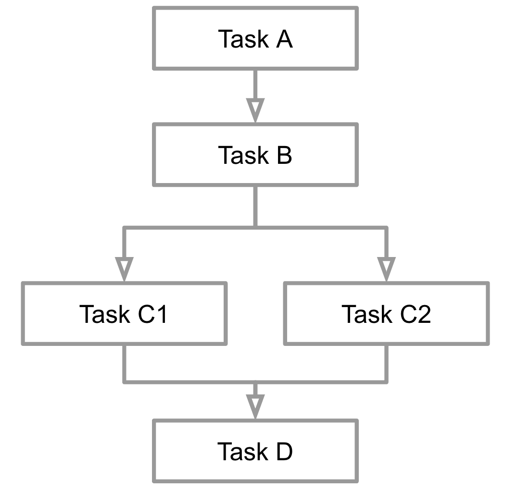
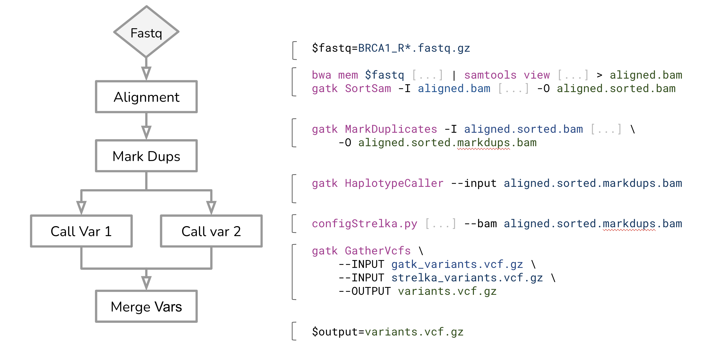

Introduction to Nextflow
- Learn about the benefits of a workflow manager.
- Learn Nextflow terminology.
- Learn the basic commands and options required to run a Nextflow workflow
1.1.1. What is a Workflow?
A workflow is a sequence of steps or processes through which a piece of work passes 1. These steps may be dependent on other tasks to complete, or they can be run in parallel.

In bioinformatics workflows, each step would commonly comprises of a computation tool that operates on some input files to produce output files. A workflow can be as simple as many command line tools chained together to facilitate complex data manipulations.

A simple script like this example above would likely be adequate to prototype a workflow for a once-off analysis. However, there are many other considerations to take into account when turning this into an efficient and scalable computational workflow. For example:
- How do we remove uneeded intermediate files?
- How do we handle tool installations, versions, and dependencies?
- How do we submit each of these jobs into a job scheduler (e.g Slurm) in a High Performance Computing (HPC) cluster?
- How do we resume a partially failed workflow, especially if some of the initial completed tasks take long to compute?
- How do we capture the log outputs from each tool?
- How do we monitor how far the workflow has progressed?
- How do we share this workflow?
Some of these considerations are the primary reasons why people choose to use a workflow system to orchestrate and deploy their computational workflows. There are many existing workflow systems, and Nextflow is one of them.
1.1.2. What is Nextflow?
Nextflow is a commonly used workflow system used to build scalable, portable, and reproducible computational workflows.
It addresses the considerations that we discussed in the previous sections, providing features such as:
- Scalability, portability, and reproducibility
- Ease of workflow deployment and sharing
- Execution abstraction between workflow logic and execution system
Nextflow implements its own domain-specific language (DSL), which extends from the Groovy programming language (a derivation of Java).
You will notice there are libraries and functions used in Nextflow workflows that are still written in the native Groovy script.
1.1.3. Processes and Channels
In Nextflow, processes and channels are the fundamental building blocks of a workflow.
A process is a unit of execution that represents a single computational step in a workflow. It typically performs one specific task, and specifies its input and outputs and any directives required for its execution. Processe scripts can be written in any language that can be executed from the command line, such as Bash, Python, or R.
process sayHello {
input:
val x
output:
stdout
script:
"""
echo '$x world!'
"""
}In the above example, the process called sayHello takes one input variable x, prints the value that is input into the process with world!, and outputs the standard output stdout. In this example, Bash is used inside the script block. This is the default script language used in Nextflow.
Processes can also be parameterized, allowing for flexibility in their behaviour and to enable their reuse in the same workflow, and between different workflows. Processes are executed independently (i.e., they do not share a common writable state) as tasks and can run in parallel, allowing for efficient utilization of computing resources. Nextflow automatically manages the data dependencies between processes, ensuring that each process is executed only when its input data is available and all of its dependencies have been satisfied.
A channel is an asynchronous first-in, first-out (FIFO) queue that is used to join processes together.

Channels allow data to be passed between processes, and can be used to manage data, parallelize tasks, and structure workflows. A process can define one or more channels as an input and output. Ultimately, the workflow execution itself is implicitly defined by these declarations.
Channel.of('Bonjour', 'Ciao', 'Hello', 'Hola')
.set { ch_input }
ch_output = sayHello(ch_input)In this example, four strings Bonjour, Ciao, Hello, Hola are assiged to a channel ch_input. This channel is then input to the sayHello process, where each element in the channel creates separate tasks that are executed in parallel. The output of the process is assigned to a channel ch_output.
1.1.4. Execution abstraction
While a process defines what command or script is executed, the executor determines how and where the script is executed.
Nextflow provides an abstraction between the workflow’s functional logic and the underlying execution system. This allows users to define a workflow once and execute it on different computing platforms without having to modify the workflow. Nextflow provides a variety of built-in execution options (eg. locally, HPC cluster, and cloud-based), and allows users to easily switch between these options using command-line arguments.

If not specified, processes are executed on your local computer, which is useful for workflow development and testing purposes. However, for real-world computational workflows, an HPC or cloud-based platform is often required.
You can find a full list of supported executors as well as how to configure them here.
1.1.5. Nextflow CLI
Nextflow provides a robust command line interface for the management and execution of workflows. Nextflow can be used on any POSIX compatible system (Linux, OS X, etc), and requires Bash 3.2 (or later) and Java 11 (or later, up to 18) to be installed.
Nextflow has been pre-installed in our cluster. To load nextflow, ….
TO DO Add how to load nextflow
Nextflow is distributed as a self-installing package and does not require any special installation procedure.
- Download the executable package using either
wget -qO- https://get.nextflow.io | bashorcurl -s https://get.nextflow.io | bash - Make the binary executable on your system by running
chmod +x nextflow. - Move the
nextflowfile to a directory accessible by your$PATHvariable, e.g,mv nextflow ~/bin/
1.1.6.Nextflow options and commands
Nextflow provides a robust command line interface for the management and execution of workflows. The top-level interface consists of options and commands.
You can list Nextflow options and commands with the -h option:
nextflow -hUsage: nextflow [options] COMMAND [arg...]
Options:
-C
Use the specified configuration file(s) overriding any defaults
-D
Set JVM properties
-bg
Execute nextflow in background
-c, -config
Add the specified file to configuration set
-config-ignore-includes
Disable the parsing of config includes
-h
Print this help
-log
Set nextflow log file path
-q, -quiet
Do not print information messages
-remote-debug
Enable JVM interactive remote debugging (experimental)
-syslog
Send logs to syslog server (eg. localhost:514)
-trace
Enable trace level logging for the specified package name - multiple packages can be provided separating them with a comma e.g. '-trace nextflow,io.seqera'
-v, -version
Print the program version
Commands:
clean Clean up project cache and work directories
clone Clone a project into a folder
config Print a project configuration
console Launch Nextflow interactive console
drop Delete the local copy of a project
help Print the usage help for a command
info Print project and system runtime information
inspect Inspect process settings in a pipeline project
kuberun Execute a workflow in a Kubernetes cluster (experimental)
list List all downloaded projects
log Print executions log and runtime info
plugin Execute plugin-specific commands
pull Download or update a project
run Execute a pipeline project
secrets Manage pipeline secrets
self-update Update nextflow runtime to the latest available version
view View project script file(s)Options for each Nextflow command can also be viewed by appending the -help option. Note that there is only one dash in the -help option.
nextflow run -help1.1.7. Managing your environment
You can also use environment variables to control the Nextflow runtime and the underlying Java virtual machine. These variables can be exported before running a workflow and will be interpreted by Nextflow.
Since we are using shared storage, we should consider storing shared software in a location that is accessible by all users in the cluster. The key Nextflow environment variables to do this is NXF_APPTAINER_CACHEDIR for Apptainer, NXF_SINGULARITY_CACHEDIR for Singularity, and NXF_CONDA_CACHEDIR for Conda environment managers.
TO DO Add what we’re using
Today, we will use …
export ...TO DO Add what cache directory we are using
Images downloaded by workflow executions will now be stored in this directory.
1.1.8. Executing a workflow
Nextflow also enables users to run workflows hosted in a remote code repository such as GitHub, by specifying the repository URL or its qualified name. For example, if a Nextflow project bar is hosted in a GitHub repository foo at the address http://github.com/foo/bar, it could be run using either:
nextflow run foo/bar
nextflow run http://github.com/foo/barAs our first exercise, we will execute the hello workflow directly from nextflow-io GitHub repository. Start by creating a directory lesson1.1 and change into it move into it.
mkdir ./lesson1.1 && cd $_Exercise: Use the nextflow run command to run the pipeline using the qualified name.
nextflow run nextflow-io/helloN E X T F L O W ~ version 23.04.1
Launching `https://github.com/nextflow-io/hello` [deadly_hoover] DSL2 - revision: 1d71f857bb [master]
executor > local (4)
[a2/9c17c8] process > sayHello (2) [100%] 4 of 4 ✔
Hello world!
Bonjour world!
Hola world!
Ciao world!If you run a workflow, it will look for a local file with the workflow name you’ve specified. If that file does not exist, it will look for a public repository with the same name on GitHub (unless otherwise specified). If it is found, Nextflow will automatically pull the workflow to your global cache and execute it.
Be aware of what is already in your current working directory where you launch your workflow, if there are other workflows (or configuration files) you may encounter unexpected results.
TO DO Change srun partition command
Short answer, no! Even though nextflow is not performing any heavy computation, without the necessary execution configurations, all the processes within the workflow will be executed locally.
For the remaining sessions, we will run Nextflow in a compute node on an interactive Slurm job.
srun --pty -p <PARTITION> --mem 8GB --mincpus 2 -t 0-5:00 bash- Nextflow is a workflow system that provide features that enable a workflow to be scalable, portable and reproducible
- Environment variables can be used to control your Nextflow runtime (especially to set your shared software location)
- The command
nextflow runcan be used to execute a workflow
These materials are adapted from Customising Nf-Core Workshop by Sydney Informatics Hub
Footnotes
https://www.lexico.com/definition/workflow↩︎